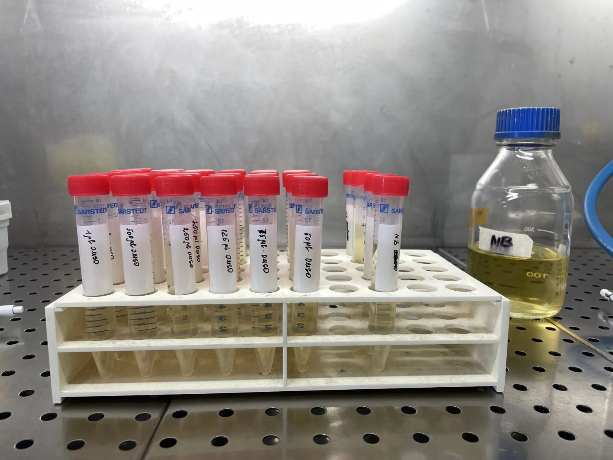
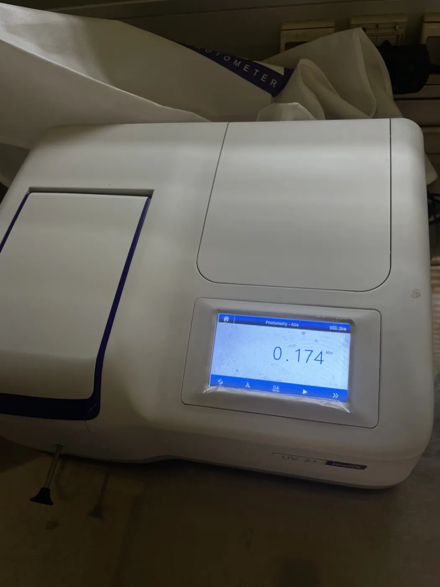
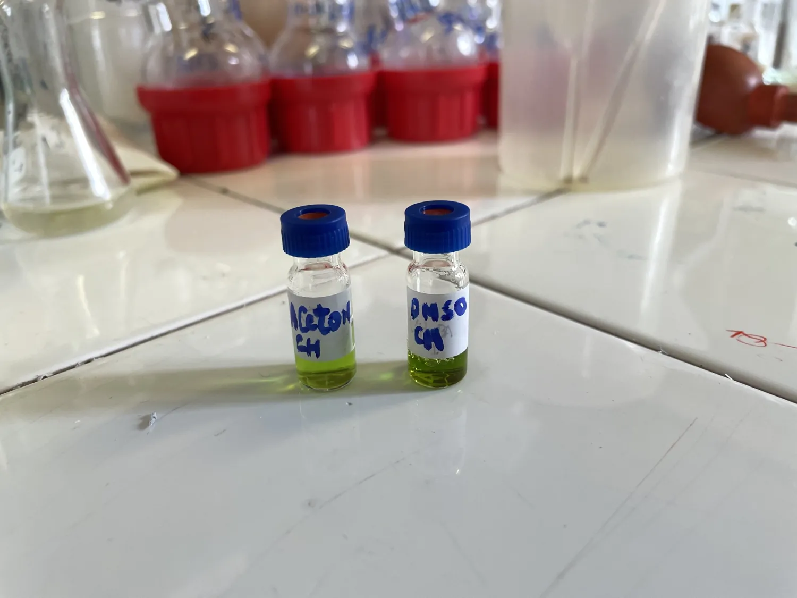
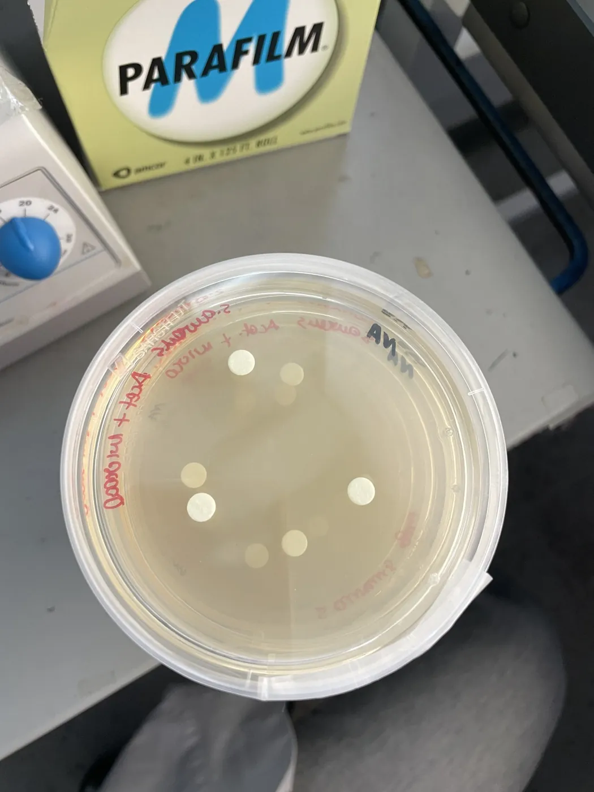
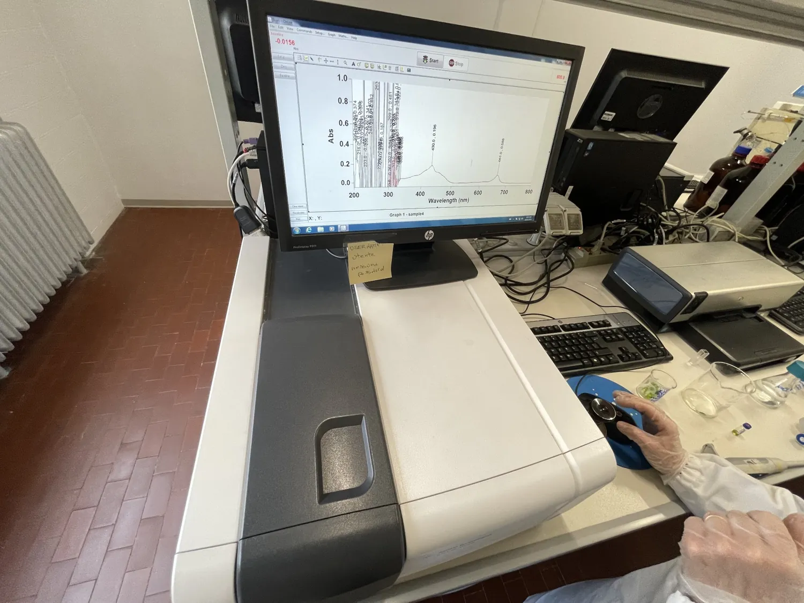
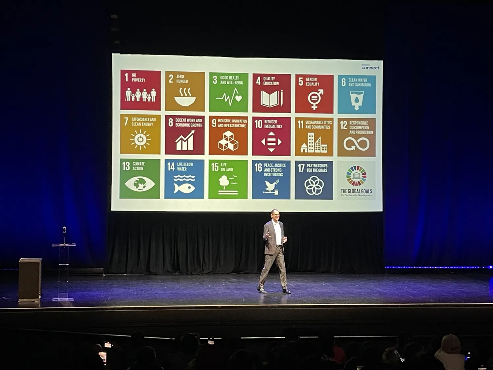
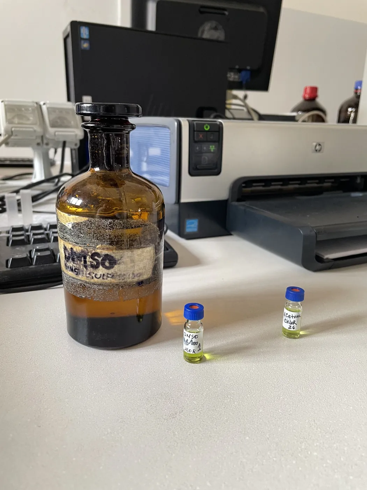
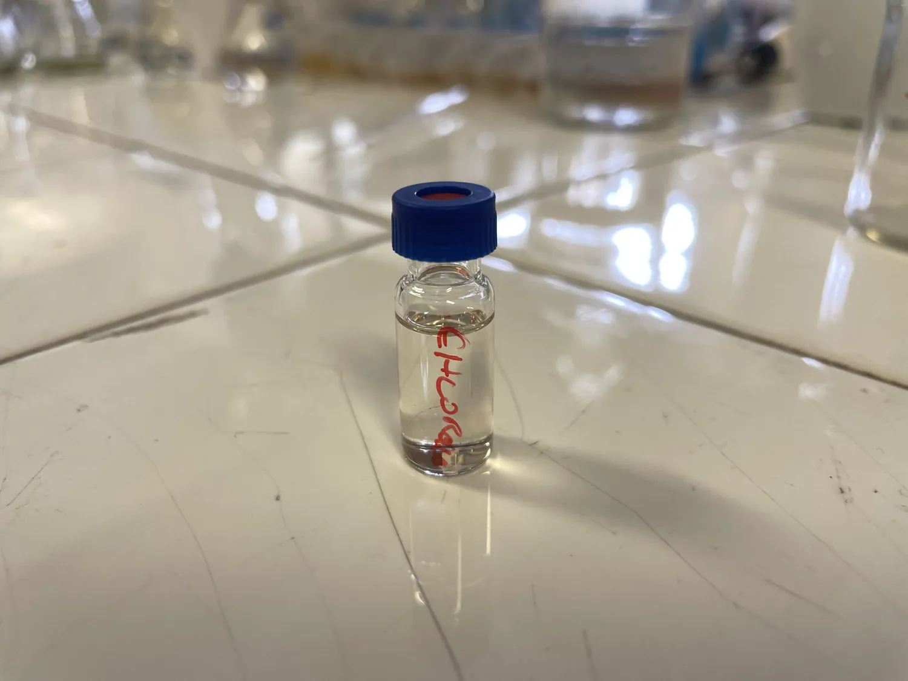
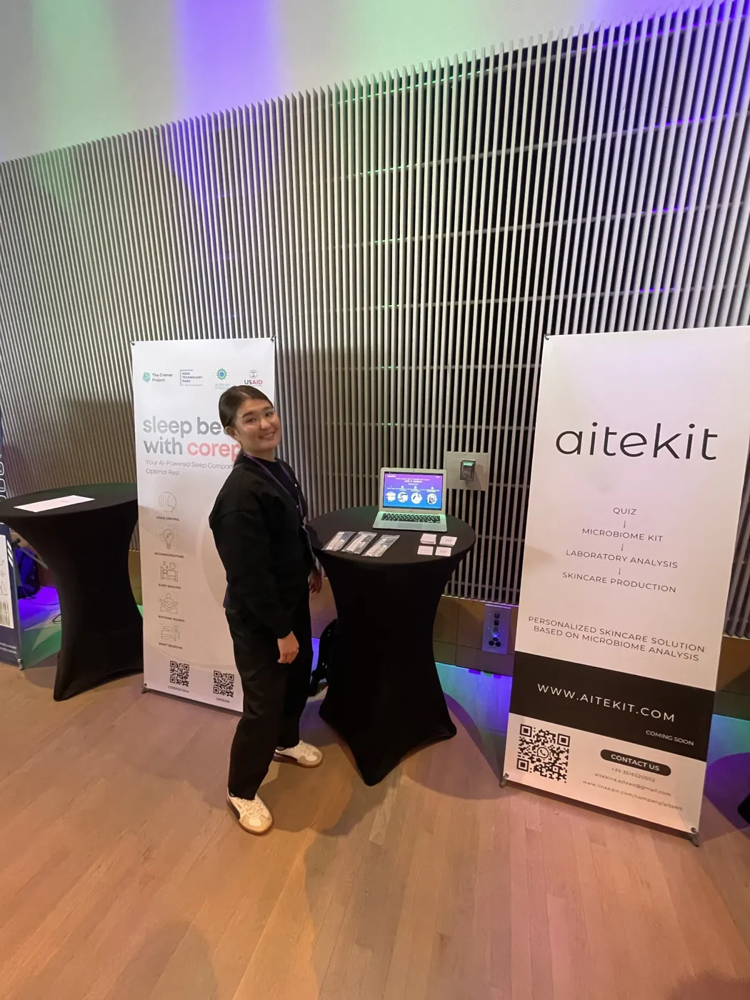
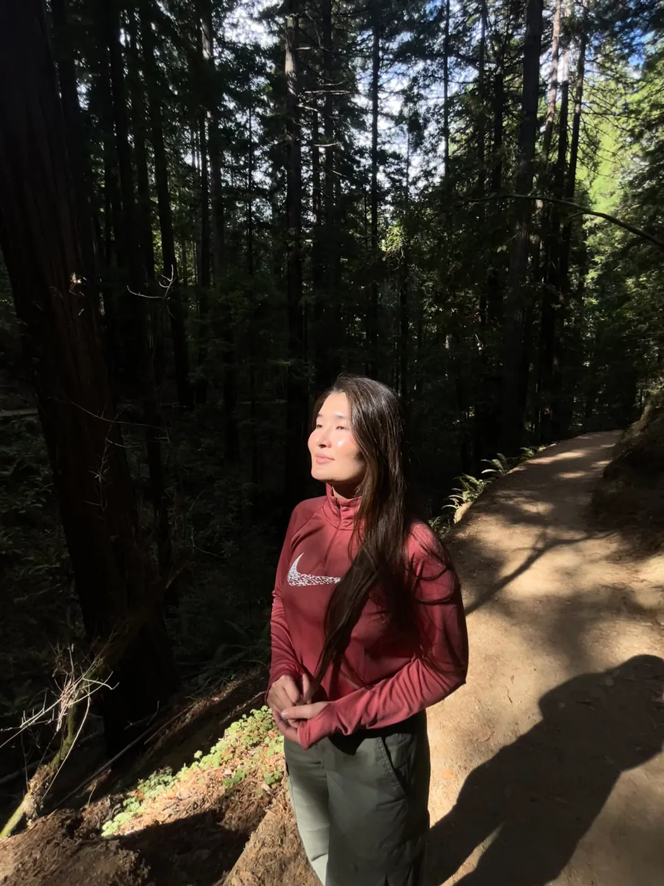

ALMATY, KAZAKHSTAN
Jas Incubation
AITEKIT completed the Jas Incubation Fall Season program. An early step in learning how to communicate a scientific idea as a startup.
See certificate ↗I’m Aziza. A pharmaceutical biotechnologist fascinated by the tiny ecosystems living on our skin, and by what happens when science meets the courage to build something new.

My journey started in Kazakhstan, where I studied biotechnology and became interested in a question that seemed simple: why does the same skincare product work differently for different people?
That question led me toward skin-associated microorganisms, the microbiome, and eventually to Italy, where I completed my MSc in Pharmaceutical Biotechnology at the University of Padua.
Along the way, I learned that I love two very different things: the precision of a laboratory experiment and the uncertainty of building a startup. Today, I’m trying to bring those worlds together.


University of Padua · MSc Pharmaceutical Biotechnology · 2025

I investigated the potential of microalgae-derived extracts for skin-focused applications, combining extraction chemistry, analytical characterization and experiments with Staphylococcus aureus.
The work included solvent-based extraction, UV–Vis spectroscopy, LC–MS analysis and antimicrobial screening. We identified candidate bioactive compounds, including carotenoid-related signals.
Under the conditions tested, the extracts did not demonstrate convincing anti-S. aureus activity. Solvent controls were essential to interpreting the results. For me, this is what research is about: following the evidence, not just the hypothesis.



What if skincare could start with understanding your skin, rather than guessing what it needs?

Conventional skincare often begins with product categories. I wanted to explore a different starting point: the biological characteristics of an individual’s skin, including its microbiome.
AITEKIT was conceived as a personalized skincare platform connecting skin sample collection, microbiome analysis, interpretation of results and ingredient selection. The platform remains a research and product-development concept, not a validated clinical diagnostic service.
People seeking more individualized skincare guidance, and potentially dermatologists, clinics and research partners exploring microbiome-informed approaches.
AITEKIT completed the Jas Incubation Fall Season program. An early step in learning how to communicate a scientific idea as a startup.
See certificate ↗Early website experiments, product positioning and the first version of a microbiome-oriented platform. AITEKIT was incorporated in the UK in May 2024.
Completed the six-week GoAbroad online acceleration program, focused on entrepreneurship, innovation and doing business in the United States. I also explored the Bay Area startup ecosystem, including Palo Alto and San Francisco.
Completed my MSc at the University of Padua, connecting my interests in microbiology, microalgae-derived compounds and skin science.
Expanding my experience in cosmetic formulation and quality control, exploring CHLORÈN as a science-led haircare project, and looking for new opportunities in biotechnology and research.

I care about good questions, beautiful design, thoughtful products and meeting people who challenge how I think. Some days I’m reading scientific papers. Others I’m presenting an idea, working on a formula, or taking a long walk to clear my head.
I’m still figuring out where all these interests will take me. That’s part of the adventure.

FOR RESEARCH, COLLABORATION, OR A GOOD CONVERSATION